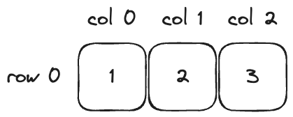
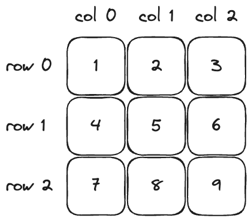

Multidimensional Array
Multidimensional array merupakan array yang memiliki dua atau lebih dimensi. Dengan kata lain, multidimensional array merupakan kumpulan dari beberapa array. Pada bagian ini akan lebih banyak membahas mengenai array dua dimensi.
Array Dua Dimensi
Pada bagian sebelumnya, telah dipelajari mengenai array satu dimensi yang ditandai dengan menggunakan sepasang kurung siku ([]). Namun, apabila array tersebut memiliki dua dimensi, maka akan ditandai dengan dua pasang kurung siku ([][]).
Pada array satu dimensi hanya memiliki satu buah baris dan beberapa kolom. Sedangkan, pada array dua dimensi dapat digambarkan seperti sebuah tabel, yakni memiliki beberapa baris dan beberapa kolom.
{kind=link}
Array 1D
{kind=link}
Array 2D
Deklarasi Array Dua Dimensi
Berikut adalah syntax dalam melakukan deklarasi array dua dimensi.
tipe_data[][] nama_array = new tipe_data[jumlah_baris][jumlah_kolom];
atau
tipe_data[][] nama_array = {
{data1, data2, ...},
{data3, data4, ...},
...
};
Berikut adalah contoh implementasi kode untuk kedua cara deklarasi array dua dimensi.
public class Main {
public static void main(String args[]) {
int[][] numbers = new int[3][3];
System.out.println("Array numbers: ");
for (int i = 0 ; i < numbers.length ; i++) {
for (int j = 0 ; j < numbers[i].length ; j++) {
System.out.print(numbers[i][j] + " ");
}
System.out.println("");
}
int[][] numbers2 = {
{1, 2, 3},
{4, 5, 6},
{7, 8, 9},
};
System.out.println("Array numbers2: ");
for (int i = 0 ; i < numbers2.length ; i++) {
for (int j = 0 ; j < numbers2[i].length ; j++) {
System.out.print(numbers2[i][j] + " ");
}
System.out.println("");
}
}
}
Array numbers:
0 0 0
0 0 0
0 0 0
Array numbers2:
1 2 3
4 5 6
7 8 9
Berdasarkan kode di atas, bagian atas merupakan deklarasi array bernama numbers untuk tipe data int sebanyak 3 baris dan 3 kolom yang berisikan nilai default, yaitu nol (0). Pada bagian bawah merupakan deklarasi array bernama numbers2 untuk tipe data int sebanyak 3 baris dan 3 kolom yang berisikan nilai sesuai yang diberikan.
Note
Apabila ingin menampilkan data pada array satu dimensi hanya memperlukan satu iterasi saja, karena data hanya terdiri dari satu baris. Sedangkan, apabila ingin menampilkan data pada array dua dimensi diperlukan dua iterasi, karena iterasi pertama untuk setiap baris dan iterasi kedua untuk setiap kolom.
Menetapkan dan Mengakses Array Dua Dimensi
Berikut adalah implementasi kode untuk menetapkan dan mengakses nilai dari sebuah array dua dimensi.
public class Main {
public static void main(String args[]) {
int[][] numbers = new int[2][3];
numbers[0][0] = 1;
numbers[0][1] = 2;
numbers[0][2] = 3;
numbers[1][0] = 4;
numbers[1][1] = 5;
numbers[1][2] = 6;
System.out.println("Nilai dari numbers[0][0] adalah " + numbers[0][0]);
System.out.println("Nilai dari numbers[1][0] adalah " + numbers[1][0]);
System.out.println("Nilai dari numbers[1][2] adalah " + numbers[1][2]);
}
}
Nilai dari numbers[0][0] adalah 1
Nilai dari numbers[1][0] adalah 4
Nilai dari numbers[1][2] adalah 6
Beradasarkan kode di atas, dilakukan inisialisasi array bernama numbers dengan tipe data int sebanyak 2 baris dan 3 kolom. Nilai dari array tersebut adalah { 0, 0, 0 } dan { 0, 0, 0}. Kemudian, dilakukan penetapan nilai pada masing-masing index dari array tersebut. Sehingga, nilai pada array berubah menjadi { 1, 2, 3 } dan { 4, 5, 6}. Kemudian, dilakukan akses nilai dari array yang akan ditampilakan ke console. Hasil yang muncul pada console sesuai dengan yang ditetapkan sebelumnya, bahwa index baris ke-0 dan kolom ke-0 adalah 1, dan seterusnya.
Contoh Implementasi Array Dua Dimensi
Berikut adalah contoh program untuk menjumlahkan angka setiap baris dari array dua dimensi.
public class Main {
public static void main(String args[]) {
int[][] numbers = {
{1, 2, 3},
{4, 5, 6},
};
for (int i = 0 ; i < numbers.length ; i++) {
int sum = 0;
for (int j = 0 ; j < numbers[i].length ; j++) {
sum += numbers[i][j];
}
System.out.println("Jumlah baris ke-" + i + " adalah " + sum);
}
}
}
Jumlah baris ke-0 adalah 6
Jumlah baris ke-1 adalah 15
Pertama, dilakukan deklarasi array dua dimensi bernama numbers dengan nilai { 1, 2, 3 } dan { 4, 5, 6}. Kemudian, dilakukan iterasi untuk setiap baris (iterasi for paling luar). Pada awal iterasi tersebut, dibuat sebuah variabel bernama sum yang berguna untuk menyimpan nilai penjumlahan. Lalu, dilakukan iterasi untuk setiap kolom (iterasi for paling dalam). Di dalamnya terdapat operasi yang menjumlahkan nilai dari variabel sum sebelumnya dengan angka pada array. Setelah iterasi untuk setiap kolom selesai, dilanjutkan dengan output ke console untuk jumlah yang sudah dihitung. Pada baris ke-1, terdapat angka 1, 2, dan 3 yang apabila dijumlahkan menghasilkan 6. Sedangkan, pada baris ke-2, tedapat angka 4, 5, dan 6 yang apabila dijumlahkan menghasilkan 15.
Note
Array dua dimensi biasanya digunakan dalam permainan untuk merepresentasikan sebuah peta, papan permainan, dan sebagainya. Contohnya pada permainan papan catur yang menggunakan array dua dimensi untuk menyimpan posisi bidak pada baris dan kolom tertentu.